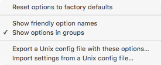

Revert Tidy Options to Built-In Settings
When working in Preferences you may sometimes find it convenient to reset all of default options to Tidy’s built-in “factory settings” without resorting to deleting all of your preferences.
-
Access the menu at the bottom of the Tidy Options panel in the Preferences window. 
-
Select Reset options to factory defaults.
-
You should see that all of the Tidy options have reverted to their factory default states.